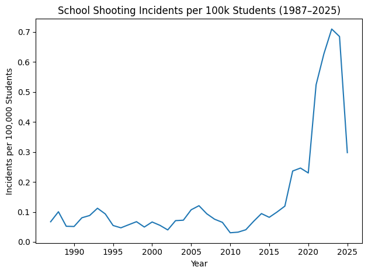
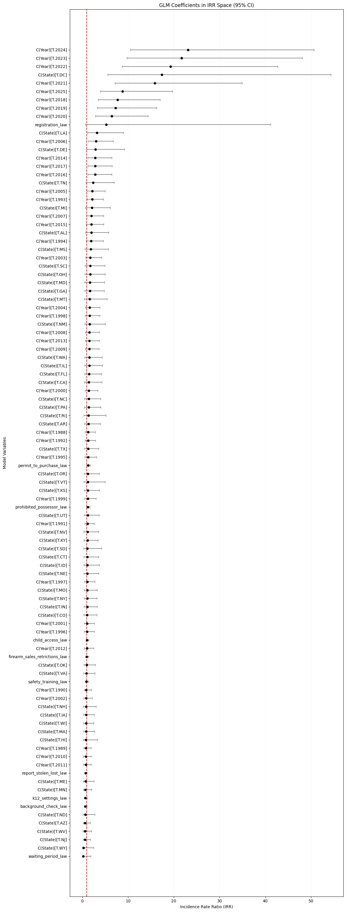
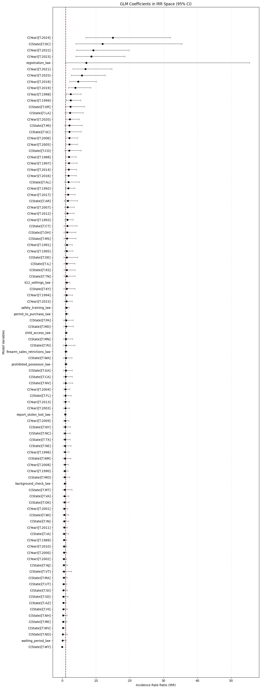

Project Model Summary
We examine school shooting incidents across U.S. states over time and compare those patterns with state firearm policies. Our main questions are whether policies are linked to how often incidents happen and whether they are linked to how harmful those incidents are when they occur.
SECTION 1 — Overview
We use state-by-year data from 1987 forward, along with public school enrollment, to study incident rates and levels of harm. Across the main models, the clearest pattern is a strong national rise in recent years, while most policy effects remain small or unclear.
SECTION 2 — Models Used
Negative Binomial Model for Incident Count
Used for: estimating how often school shooting incidents happen in each state and year.
Question answered: Are policy changes linked to more or fewer incidents?
Target: incident count.
Negative Binomial Model for Total Victims
Used for: estimating overall harm across each state and year.
Question answered: Are policy changes linked to more or fewer total victims?
Target: total victims.
Gamma Model for Victims per Incident
Used for: estimating how severe incidents are once an incident has already happened.
Question answered: Are policy changes linked to higher or lower harm per incident?
Target: victims per incident.
Poisson Model with State-Clustered Errors
Used for: checking whether the main pattern still appears under a stricter comparison.
Question answered: Do the broad policy and time patterns still point in the same direction?
Target: incident count.
SECTION 3 — Key Findings
- The clearest result is a strong national rise in incident rates in the later years, especially from 2018 through 2024.
- The same late-year rise also appears when we look at total victims, not just incident count.
- In the main incident-count model, we do not see clear evidence that any single policy measure changed incident counts on its own.
- In the total-victims model, the policy results are again mostly unclear.
- In the victims-per-incident model, the policy related to K-12 settings stands out most clearly and is linked to higher harm per incident.
- The background check measure comes close in a few places, but not strongly enough to treat it as a firm conclusion.
- Overall, the national time pattern is much stronger than the short-run policy pattern.
SECTION 4 — Visual Evidence

This chart shows the national incident rate over time. The sharp rise in the later years supports our main takeaway that recent time trends stand out more than individual policy changes.

This chart shows the school enrollment trend used as the population base for comparing states and years. It helps explain why the models look at rates, not just raw counts.

This chart shows the main incident-count model. Most policy estimates sit close to the no-clear-change line, while the later-year effects are much more prominent.

This chart shows the model for total victims. It tells the same broad story: later years matter more than most policy terms.

This chart shows the model for harm per incident. Here, the policy related to K-12 settings is the clearest policy signal and is associated with higher victims per incident.
SECTION 5 — Final Takeaways
- The strongest pattern is a nationwide increase in school shooting risk in recent years.
- We do not see strong, consistent evidence that most single policies changed incident counts on their own.
- The same is true when the outcome is total victims: the later time period is clearer than most policy effects.
- One policy measure stands out in the incident-only severity model, where the policy related to K-12 settings is linked to higher harm per incident.
- For decision-making, the main message is that time trends dominate the results.
This summary uses the same results and visuals shown in our analysis.